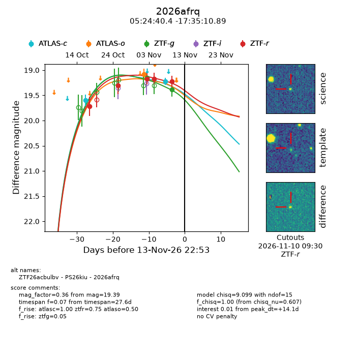
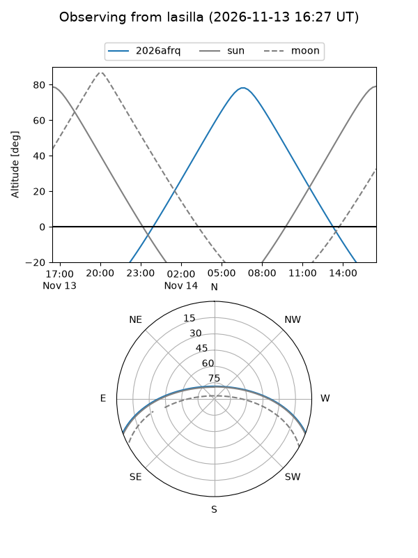
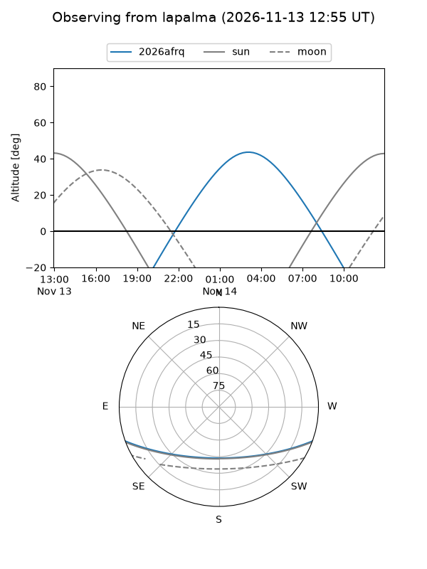
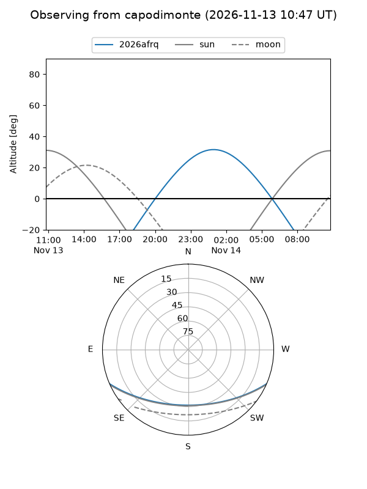
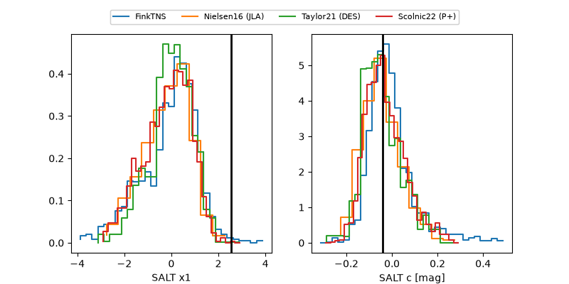

2026afrq
Target 2026afrq at 2026-11-13 22:55
Aliases and brokers:
FINK-ZTF: ztf.fink-portal.org/ZTF26acbulbv
Lasair-ZTF: lasair-ztf.lsst.ac.uk/objects/ZTF26acbulbv
ALeRCE-ZTF: alerce.online/object/ZTF26acbulbv
YSE-PZ: ziggy.ucolick.org/yse/transient_detail/2026afrq
TNS name: wis-tns.org/object/2026afrq
Direct TNS query: direct search
alt names
ZTF26acbulbv (ztf,fink_ztf)
2026afrq (tns,yse)
PS26kiu (panstarrs)
Coordinates:
equatorial (ra, dec) = 81.1685,-17.58636
equatorial (HMS+DMS) = 05:24:40.43,-17:35:10.89
galactic (l, b) = (219.8994,-26.82961)
Flags:
peak dt: +14.1
Photometry:
last atlasc=19.22, atlaso=19.08, ztfg=19.39, ztfr=19.22
2 atlasc, 1 atlaso, 2 ztfg, 5 ztfr detections
Lightcurve

Visibility



Additional plots
